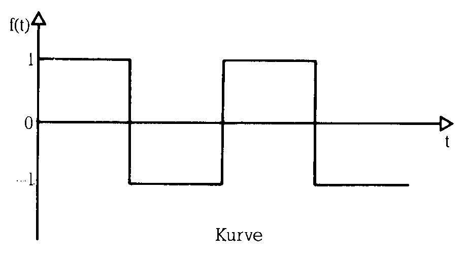
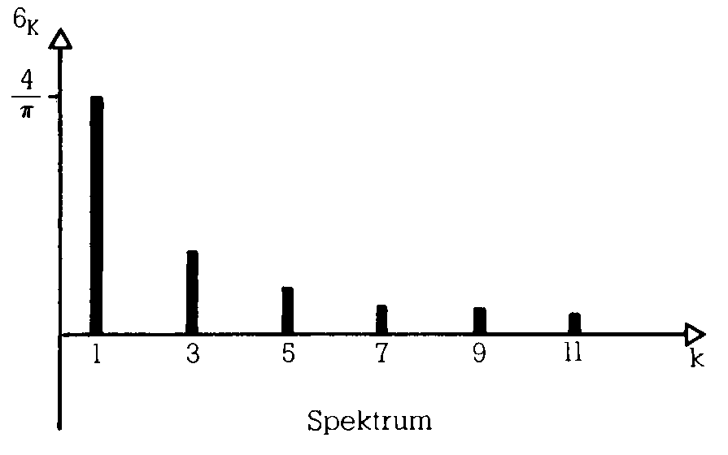
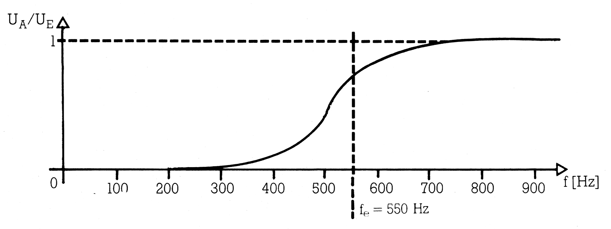
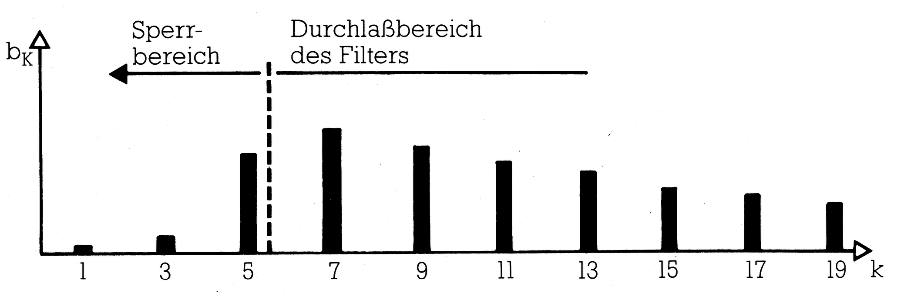
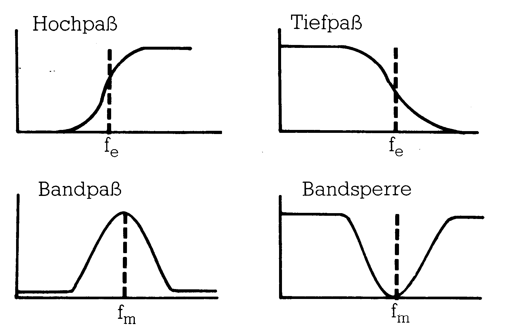
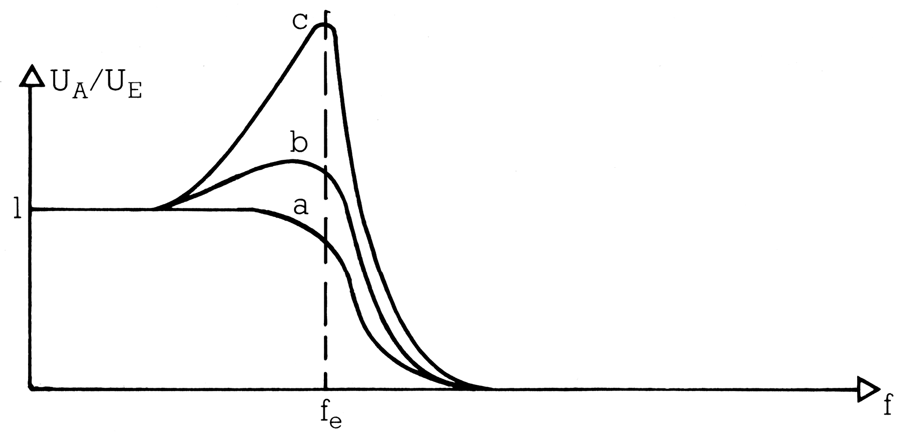

Dem Klang auf der Spur: Teil 2
Bevor wir in der nächsten Folge genauer auf die Musik- und Klangerzeugung auf dem SID eingehen, soll in dieser Folge die Musik im allgemeinen behandelt werden.
Der Komplex Mathematik/Informatik und die Musik haben sich lange genug als zwei getrennte Welten gegenübergestanden. In den letzten Jahren hat man erkannt, daß Computerprogramme, die von anderen Leuten benutzt werden als von denen, die sie geschrieben haben, möglichst viele Sinne und Bereiche des Gehirns ansprechen müssen, um Erfolg zu haben. Schlagwörter wie Benutzerfreundlichkeit, Softwareergonomie und gehirngerechte Programme sind in diesem Zusammenhang aufgetaucht. Ästhetische Gesichtspunkte setzen sich in der Computertechnik mehr und mehr durch.
Die Musik bedient sich seit der Erfindung des Phonographen mehr und mehr der Technik, besonders der Elektronik, die auch die technische Grundlage für Computer darstellt. Und obwohl die Welten noch getrennt sind, gibt es eine Menge Analogien zwischen Informatik und Musik: Musiker und Informatiker wirken beide gestaltend. Beide schreiben ihre Werke in einer abstrakten Sprache nieder. Die Werke erwachen erst durch eine Interpretation zum Leben und vermögen uns dann zu faszinieren. Was dem Musiker sein Instrument ist, ist für den Informatiker der Computer. Sowohl in der Informatik als auch in der Musik gab und gibt es Tendenzen, universelle Instrumente, die möglichst alles können sollen, zu schaffen. In der Musik zeugen die gewaltigen Kirchenorgeln und die Orchestrions des vorigen Jahrhunderts von diesen Bemühungen. Programmgesteuerte Rechner waren schon bald nach ihrer Erfindung mehr als nur Rechenmaschinen. Die technische Annäherung der beiden Bereiche ist heute schon so weit fortgeschritten, daß, zumindest was elektronische Musik anbelangt, es keinen wesentlichen Unterschied mehr zwischen Computern und Musikinstrumenten gibt. Mit Computern kann man heute nicht nur Noten editieren und Partituren plotten lassen, sondern Musik direkt auf vielfältige Weise wiedergeben. Ein moderner Synthesizer kann heute nicht nur typisch »elektronische« Klänge erzeugen, sondern auch lebendige Naturklänge bis hin zur menschlichen Stimme. Und bei genauerer Betrachtung erweist er sich als ein Computer, der mit einigen Sonderbauteilen und einem besonderen Betriebssystem auf seine Aufgabe spezialisiert wurde.
Der Musiker (zumindest der Studiomusiker) kommt also heute nicht darum herum, sich auch mit der Computertechnik zu befassen, während der Computerspezialist eher spielerisch mit der Musik, die sein Computer so nebenbei bietet, konfrontiert wird.
Man kann wagen zu hoffen, daß der künstlerische und der wissenschaftliche Typ im Universalinstrument Computer einen Ort der Begegnung finden werden. Dieser könnte ihnen die Welt des jeweiligen anderen Charakters, der in vielleicht vernachlässigter Form auch in einer eigenen Gehirnhälfte schlummert, auf vertrautem Boden eröffnen.
Diese Serie soll hauptsächlich dem Computeranwender, der schon einige Programmiererfahrung hat, zeigen wie man die Musikfähigkeiten des C64 gezielt einsetzen kann, doch sollen auch die Musiker, die genügend Aufgeschlossenheit gegenüber der neuen Technik mitbringen, nicht zu kurz kommen.
Die Grundlagen
Um die Wirkungsweise elektronischer Musikinstrumente zu verstehen und um Musik einer Bearbeitung mit dem Computer zugänglich zu machen, müssen wir akustische Ereignisse mit Mitteln der Physik und der Mathematik beschreiben. Wenn auch unsere Sprache eine sehr technische ist, werden wir doch so oft wie möglich den Bezug zur traditionellen Sprache der Musik herstellen. Da wir stilistisch zunächst keine experimentelle Musik machen wollen, sondern Musik im traditionellen Stil mit dem Computer realisieren wollen, ist dies sogar unumgänglich.
Musik nicht mehr als Schwankungen des Schalldrucks?
Auslösend für eine Wahrnehmung des Gehörs ist ein sich schnell verändernder Schalldruck. Treten diese Veränderungen periodisch, das heißt zeitlich regelmäßig auf, so nimmt das Gehör einen Ton oder einen Klang wahr, andernfalls ein Geräusch. Trägt man den sich verändernden Schalldruck nach oben gegen eine rechtsgerichtete Zeitachse auf, erhält man einen für das akustische Geschehen charakteristischen Kurvenzug (Bild 1). Bei Tönen und Klängen, die einen periodischen Kurvenverlauf haben, genügt zur vollständigen Beschreibung die Angabe einer einzelnen Periode. Diese Beschreibungsart nennt man »Darstellung im Zeitbereich«, da sich aus ihr zu jedem Zeitpunkt die zugehörige Amplitude ablesen läßt. Diese Beschreibungsart erscheint, technisch gesehen, zunächst als die natürlichste, zumal bereits seit langem existierende Geräte wie Plattenspieler und Tonbandgerät getreue Abbilder solcher Kurvenzüge in Form von Rillen beziehungsweise einer magnetisierten Schicht verwenden. Die Beschreibung im Zeitbereich entspricht aber nicht der Arbeitsweise des Gehörs. Das Ohr ist kein Mikrofon, das nur Kurvenzüge an das Gehirn weitergibt. Dem Gehör und auch den meisten elektronischen Musikinstrumenten entspricht besser die »Beschreibung im Frequenzbereich«.
Beschreibung im Frequenzbereich — Fourier-Reihen
Wir betrachten zunächst periodische Kurvenzüge, weil diese als Töne und Klänge die Hauptrolle in der Musik spielen. Um einen periodischen Kurvenzug zu beschreiben, genügt es eigentlich, seine Frequenz, das heißt die Anzahl der Perioden, die pro Sekunde wiederkehren, seine Amplitude, also den Wert des maximalen Ausschlags des Kurvenzuges nach oben und nach unten und die Kurvenform zu kennen (Bild 2). Frequenz und Amplitude lassen sich leicht durch Zahlen ausdrücken. Da Frequenz und Amplitude für Tonhöhen- und Lautstärkeempfinden verantwortlich sind, hat man hier schon zwei musikalisch wichtige Parameter erfaßt. Die Kurvenform, die für den Klangcharakter verantwortlich ist, kann man allerdings nicht so einfach beschreiben. Es gibt aber einige einfache spezielle Kurvenformen, die sowohl theoretisch als auch musikalisch eine besondere Rolle spielen:
Die Sinus-, Rechteck-, Sägezahn- und Dreieck-Kurve
Diese Kurvenformen lassen sich mathematisch und grafisch einfach darstellen und auch technisch mit vertretbarem Aufwand mit einer Schaltung erzeugen. Der Sinus-Funktion kommt aber noch eine besondere Bedeutung zu. Akustisch wird der Sinuston, den kein natürliches Instrument erzeugen kann, als dumpf, undifferenziert und ohne ausgeprägten Charakter empfunden. Den Sinuston kann man sich als das einfachste mögliche akustische Ereignis vorstellen, aus dem man sich alle anderen Klänge mit periodischem Kurvenzug zusammengesetzt denken kann. Diese Betrachtungsweise läßt sich mathematisch durch die sogenannte »Entwicklung in Fourier-Reihen« rechtfertigen: Gehen wir von einer periodischen und stetigen Funktion aus. Stetig bedeutet anschaulich, daß der Kurvenzug keine Sprünge macht beziehungsweise, daß er sich in einem Zug zeichnen läßt ohne daß man absetzen muß. Die ideale Rechteck- und Sägezahnfunktion ist nicht stetig. Die Sprungstellen sind aber bei den realen elektro-akustischen Kurven nur mehr oder wenig steile Flanken. Eine solche Funktion kann man nun als Summe von geeigneten Sinus- und Cosinus-Funktionen schreiben (Bild 3).
Diese Summen bestehen im allgemeinen aus unendlich vielen Summanden. Eine solche Summe nennt man in der Mathematik eine Reihe. Die Fourier-Reihen bestehen aus Sinus- und Cosinus-Funktionen mit Frequenzen, die immer nur ganzzahlige Vielfache der Grundfrequenz betragen. Andere Frequenzen treten nicht auf. Die erste Komponente der Reihe nennt man auch Grundton, die weiteren Obertöne. An der unendlichen Anzahl der Summanden darf man sich nicht stoßen; eine solche Summe ist nämlich so zu verstehen: Betrachtet man nur eine Teilsumme, zum Beispiel mit allen Summanden bis zur fünffachen Grundfrequenz, so erhält man eine Funktion, die zwar nicht exakt die darzustellende Funktion ist, die sie aber bestmöglich annähert, so gut das mit fünf Sinus- und Cosinus-Funktionen eben möglich ist. Nimmt man weitere Obertöne hinzu, zum Beispiel noch den sechsten und den siebten Oberton, dann wird die Annäherung besser. Es ist durch Hinzunahme von immer mehr Obertönen in die endliche Summe möglich, die Originalkurvenform beliebig genau anzunähern, wobei Obertöne mit wachsender Frequenz anteilmäßig beliebig klein werden. Nur unter diesen Umständen darf man in der Mathematik von einer unendlichen Summe (= Reihe) sprechen. Diese Umstände sind aber bei den Fourier-Reihen durch die Theorie gesichert.
Beschreibung im Frequenzbereich — das Spektrum
Eine Fourier-Reihe wird bereits allein durch die Angabe ihrer Koeffizienten vollständig beschrieben. Die Koeffizienten sind die Zahlen, die angeben, wie stark die einzelnen Grund- und Obertonanteile vertreten sind. Die Folge dieser Koeffizienten nennt man das Spektrum der dargestellten Kurvenform. Diese Koeffizienten beschreiben einen Klang genauso vollständig wie die der Kurve zugrundeliegende Funktion. Eine anschauliche Darstellung des Spektrums erhält man, wenn man auf einer waagrechten Achse in gleichmäßigen Abständen die Frequenzen des Grundtones und der Obertöne kennzeichnet und darauf Balken errichtet, deren Höhe den Koeffizientenwerten entspricht.
Die Fourier-Reihe beziehungsweise das Spektrum eines Klanges nennt man auch »Beschreibung im Frequenzbereich«. Die beiden vorgestellten Darstellungsarten von Klängen sind gleichwertige Beschreibungen ein und derselben Sache und lassen sich ineinander umrechnen (Bild 4).
Eine periodische Funktion \( f \) kann man als FOURIER-Reihe schreiben:
\[ (1) \quad f(t) = \frac{a_0}{2} + \sum_{k=1}^\infty \left( a_k \cos(k \omega t) + b_k \sin(k \omega t) \right) \]
Dabei ist:
- \( \omega \): die sogenannte Kreisfrequenz \( = 2 \pi f_0 \)
- \( f_0 \): die Grundfrequenz der Schwingung in Hz (nicht verwechseln mit der Funktion \( f \))
- \( t \): die Zeit
- \( k \): der Laufindex, über den summiert wird
- \( a_0, a_1, \dots \): FOURIER-Koeffizienten
- \( b_1, b_2, \dots \): FOURIER-Koeffizienten
Formel (1) beschreibt, wie man bei gegebenen FOURIER-Koeffizienten (dem Spektrum) die Funktion \( f \) (den Kurvenzug) erhält.
Umgekehrt erhält man aus gegebenem \( f \) die FOURIER-Koeffizienten durch Berechnung der Integrale (2a) und (2b):
\[ (2a) \quad a_k = \frac{2}{T} \int_0^T f(t) \cos(k \omega t) \, dt \quad \text{für } k = 0, 1, 2, \dots \]
\[ (2b) \quad b_k = \frac{2}{T} \int_0^T f(t) \sin(k \omega t) \, dt \quad \text{für } k = 1, 2, 3, \dots \]
Dabei ist:
- \( \omega, t, k \): wie oben
- \( T \): die Periodendauer \( T = \frac{1}{f_0} \)
Beispiel (ohne Rechnung): Rechteckfunktion
Zeitbereich
\[ f(t) = \begin{cases} 1 & \text{für } t \in [2n\pi, (2n+1)\pi[ \\ -1 & \text{für } t \in [(2n-1)\pi, 2n\pi[ \end{cases} \]
Frequenzbereich
\[ \begin{aligned} a_0 & = a_1 = a_2 = \dots = 0 \\ b_1 & = \frac{4}{\pi}, \quad b_3 = \frac{1}{3} \cdot \frac{4}{\pi}, \quad b_5 = \frac{1}{5} \cdot \frac{4}{\pi}, \quad b_7 = \frac{1}{7} \cdot \frac{4}{\pi}, \quad \dots \\ b_2 & = b_4 = b_6 = \dots = 0 \end{aligned} \]
Wie das Gehör arbeitet
Unter Gehör wollen wir das Ohr zusammen mit dem Teil des Gehirns verstehen, der für die Verarbeitung von akustischen Reizen zuständig ist. Dem Gehör wird nun die spektrale Sichtweise von Klängen weitaus besser gerecht als die Sichtweise als Kurvenformen. Der schallverarbeitende Teil des Innenohres (Schnecke mit Basilarmembran und dem Cortischen Organ) zerlegt in der Tat die eintreffenden Schwingungen in ihre spektralen Bestandteile und leitet diese einzeln über zirka 30000 Nervenfasern an das Gehirn weiter. Das Gehirn verarbeitet also Spektren und nicht Kurvenformen. Es macht einem geschulten Gehör keine Mühe, aus einem Orchester einzelne Instrumente herauszuhören. Musiker können sogar aus dem Klang eines einzelnen Instruments die Obertöne einzeln für sich hören. Sieht man sich die Kurvenform eines Orchesterklanges mit Mikrofon und Oszilloskop an, so sieht man nur Chaos, betrachtet man aber das Spektrum, so kann man durchaus einzelne Instrumente oder Instrumentengruppen wiedererkennen. Die Leistungsfähigkeit der spektralen Betrachtungsweise wird hier deutlich. Das menschliche Gehör kann im Idealfall Frequenzen im Bereich von 16 Hz bis 20000 Hz wahrnehmen. Man kann daher bei Spektren Obertöne über 20000 Hz unberücksichtigt lassen. Ein Beispiel: Ein Sinuston und ein Sägezahnklang, beide von 400 Hz, klingen sehr unterschiedlich. Während der Sägezahn ein reichhaltiges Obertonspektrum besitzt, besteht der Sinus nur aus einem Grundton. Der Sägezahn klingt daher auch hell und scharf, während der Sinuston als weich und dumpf empfunden wird. Beträgt die Grundfrequenz der beiden Kurven aber zum Beispiel 16000 Hz, so kann man keinen Unterschied mehr hören, weil bereits der erste Oberton des Sägezahn mit 32000 Hz weit jenseits der Hörgrenze liegt.
Der Ton macht die Musik — über hohe und tiefe Töne
Wenn wir mit elektronischen Mitteln Musik machen wollen, müssen wir über Frequenzen genau Bescheid wissen. Das Gehör leitet die empfundene Tonhöhe grundsätzlich vom Grundton ab, unabhängig vom restlichen Spektrum, das für die Klangfarbe verantwortlich ist. Wir müssen uns zunächst also nur mit dem Grundton befassen. Eine interessante Eigenschaft des Gehörs ist, daß es absolute Tonhöhen schlecht, relative aber sehr gut bestimmen kann. Spielt man einen beliebigen Ton aus der Stille heraus ohne jede Vergleichsmöglichkeit, so wird sich selbst ein Musiker in der Beurteilung der Tonhöhe um bis zu mehreren Halbtönen verschätzen (außer den wenigen, die mit einem »absoluten Gehör« gesegnet sind). Spielt man aber innerhalb eines Musikstücks nur einen Viertel- oder gar einen Ächtelton falsch, so hört das sogar ein unmusikalischer Laie.
Das Gehör kann also Frequenzabstände gut beurteilen, arbeitet dabei aber logarithmisch. Das bedeutet, daß der empfundene Tonabstand, den man in der Musik als Intervall bezeichnet, nicht von der Differenz der Frequenzen abhängt, sondern von ihrem Verhältnis zueinander.
Ein Beispiel: Drei Töne mit 500 Hz, 1000 Hz und 1500 Hz sind jeweils 500 Hz voneinander entfernt. Das Verhältnis von Ton 2 zu Ton 1 ist 1000:500 = 2:1, das von Ton 3 zu Ton 2 aber 1500:1000 = 3:2. Ton 3 und Ton 2 liegen dem Hörempfinden nach näher beieinander als Ton 2 und Ton 1. Das Verhältnis 2:1 ist musikalisch die Oktave, das Verhältnis 3:2 die Quinte. Alle anderen musikalischen sinnvollen Intervalle lassen sich durch ähnlich einfache Zahlenverhältnisse charakterisieren (Tabelle 1).
| Intervall | Frequenzverhältnis |
| Oktave | 2 : 1 |
| große Septime | 15 : 8 |
| kleine Septime | 16 : 9 |
| große Sexte | 5 : 3 |
| kleine Sexte = übermäßige Quinte | 8 : 5 |
| Quinte | 3 : 2 |
| verminderte Quinte = übermäßige Quarte | 10 : 7 |
| Quarte | 4 : 3 |
| große Terz = verminderte Quarte | 5 : 4 |
| kleine Terz | 6 : 5 |
| große Sekund (Ganzton) | 9 : 8 |
| kleine Sekund (Halbton) | 16 : 15 |
Tonsysteme — reine und temperierte Stimmung
Aus einer Auswahl von theoretisch unendlich vielen Frequenzen zwischen 16 Hz und 20 000 Hz beschränkt man sich in der Musik immer auf eine Auswahl von Frequenzen, eine Skala. In dieser Auswahl kann man eine weitere Eigenschaft des Gehörs erkennen: Je einfacher das zahlenmäßige Frequenzverhältnis zweier Töne ist, desto mehr scheinen Töne zueinander zu passen, desto mehr verschmelzen sie zu einem Klangbild. Aus diesem Grund spielen in der Musik die Intervalle mit den einfachsten Frequenzverhältnissen, die Oktave (2:1), die Quinte (3:2) und die Quarte (4:3) die zentrale Rolle. Töne im Oktavabstand werden musiktheoretisch nicht einmal als etwas wesentlich Verschiedenes angesehen. Die abendländischen Tonskalen werden alle dadurch gewonnen, daß man von einem festen Ton ausgehend in Quint-, Quart- und Oktavabständen mehr oder weniger neue Töne in die Skala einbezieht. Wenn man sich mit dieser Methode um 12 Quinten nach oben vom Grundton entfernt hat, erhält man einen Ton, der annähernd 7 Oktaven vom Grundton entfernt ist. Man erhält also mit mehr als 11 Quintenschritten nichts wesentlich Neues mehr. Bringt man die durch Quintenschritte erhaltenen 11 Töne durch Oktavverschiebungen in den Bereich einer einzigen Oktave, so teilen sie dieses Intervall in 12 annähernd gleiche kleine Teilintervalle, die sogenannten Halbtöne auf. Aus diesem Grund wird in der Musik, die wir betrachten, fast ausschließlich diese 12stufige Skala oder eine Teilmenge von ihr verwendet. Die 12 Halbtöne dieser sogenannten »rein gestimmten« Skala haben, wie schon erwähnt, nicht exakt den gleichen Abstand voneinander. Wenn man eine Melodie transponiert, das heißt jeden Ton um das gleiche Intervall verschiebt, und dabei nur die 12 schon vorhandenen Halbtöne verwendet, erhält man eine Melodie, die, abgesehen davon, daß sie jetzt höher oder tiefer erklingt, auch einen etwas anderen harmonischen Charakter hat. Dieses Problem hat bereits J.S. Bach erkannt und die sogenannte temperierte Stimmung erfunden, welche die Oktave in 12 mathematisch exakt gleiche Intervalle einteilt.
Die temperierte Stimmung wird heute fast ausschließlich verwendet. Die Berechnung der Frequenzen für ein elektronisches Musikinstrument ist einfach: Ausgehend vom eingestrichenen a, dessen Frequenz international auf 440 Hz festgelegt ist, erhält man die anderen Frequenzen der anderen Töne der Oktave durch wiederholte Multiplikation mit dem Halbtonabstand 12√2. Die Frequenzen der Töne anderer Oktaven erhält man durch Multiplikation und Division mit Zweierpotenzen (Tabelle 2).
| Oktave | Note | Frequenz in Hz |
| Subkontraoktave | C2 bis H2 | |
| Kontraoktave | C1 bis H1 | |
| Große Oktave | C | 65,4064 |
| Cis | 69,2957 | |
| D | 73,4162 | |
| Dis | 77,7817 | |
| E | 82,4069 | |
| F | 87,3071 | |
| Fis | 92,4986 | |
| G | 97,9989 | |
| Gis | 103,8262 | |
| A | 110,0000 | |
| Ais | 116,5409 | |
| H | 123,4708 | |
| Kleine Oktave | c | 130,8128 |
| cis | 138,5913 | |
| d | 146,8324 | |
| dis | 155,5635 | |
| e | 164,8138 | |
| f | 174,6141 | |
| fis | 184,9972 | |
| g | 195,9977 | |
| gis | 207,6524 | |
| a | 220,0000 | |
| ais | 233,0819 | |
| h | 246,9417 | |
| Eingestrichene Oktave | C1 | 261,6256 |
| cis1 | 277,1826 | |
| d1 | 293,6648 | |
| dis1 | 311,1270 | |
| e1 | 329,6276 | |
| f1 | 349,2282 | |
| fis1 | 369,9944 | |
| g1 | 391,9954 | |
| gis1 | 415,3047 | |
| a1 | 440,0000 | |
| ais1 | 466,1638 | |
| h1 | 493,8833 | |
| Zweigestrichene Oktave | C2 | 523,2511 |
| cis2 | 554,3653 | |
| d2 | 587,3295 | |
| dis | 622,2540 | |
| e2 | 659,2551 | |
| f2 | 698,4565 | |
| fis2 | 739,9888 | |
| g2 | 783,9909 | |
| gis2 | 830,6094 | |
| a2 | 880,0000 | |
| ais2 | 932,3275 | |
| h2 | 987,7666 |
Bevor wir detailliert auf die Klangerzeugung im C 64 eingehen, wollen wir uns erst einen Überblick über die wichtigsten Synthesetechniken in elektronischen Instrumenten verschaffen.
Additive und subtraktive Synthese in Orgeln
Der Unterschied zwischen Orgel und Synthesizer verwischt sich durch den zunehmenden Einzug der Digitaltechnik mehr und mehr. Hier soll aber noch einmal der Unterschied zwischen einer typischen Orgel und einem typischen Synthesizer, wie er noch vor einigen Jahren bestanden hat, dargestellt werden.
Synthesetechniken
In einer Orgel werden fürjede einzelne Taste ein oder mehrere Töne zur Verfügung gestellt. Man braucht dazu so viele einzelne Tongeneratoren, wie das Instrument Tasten hat. Diese Tongeneratoren, die Sinus-, Rechteck- oder Sägezahnschwingungen erzeugen können, müssen alle einzeln gestimmt werden. Den Aufwand an Generatoren kann man reduzieren, wenn man nur die 12 Töne der obersten Oktave erzeugt und die Töne der weiteren Oktaven durch Frequenzteilung realisiert. Die hier erforderliche Teilung durch Zweierpotenzen ist schaltungstechnisch einfach zu lösen. Man kann sogar die 12 Töne der obersten Oktave durch Teilung aus einer noch viel höheren Master-Frequenz (im MHz-Bereich) gewinnen. Dadurch wird die Orgel stimmstabil und kann als Gesamtheit, nur durch Verändern der Masterfrequenz anderen Instrumenten angepaßt werden. Ein Nachteil dieses Teilerkonzepts ist, daß die Oktaven zu genau sind. Da Töne im Oktavabstand phasenstarr miteinander gekoppelt sind, klingen zwei solche Töne wie nur ein Ton, nur mit einem etwas volleren Oberton-Spektrum.
Charakteristisch für eine Orgel ist, daß alle Töne gleichzeitig und durchgehend bereitstehen und durch Tastendruck auf einen Verstärker durchgeschaltet werden, der sie hörbar macht. Dieses Konzept hat den Vorteil, daß beliebig viele Töne polyphon, das heißt gleichzeitig gespielt werden können. Gehen wir einmal davon aus, daß eine Generatorgruppe für alle Tasten Sinustöne zur Verfügung stellt. Dann findet man zumindest für die tieferen Töne der Klaviatur neben dem Grundton eine ganze Reihe von geeigneten Obertönen aus der Generatorgruppe. Diese kann man durch geeignete Verschaltung den Grundtönen zumischen, wobei der Anteil der Obertöne einzeln und stufenlos durch sogenannte Zugriegel eingestellt werden kann. Benötigt man auch für die hohen Töne der Klaviatur noch Obertöne, so muß die Generatorgruppe mehr Töne erzeugen können, als die Orgel Tasten hat. Einen solchen Klangaufbau aus einzelnen Obertönen nennt man »Additive Synthese«.
Filter
Nun kann die Generatorgruppe einer Orgel oft auch Rechteck- oder Sägezahnschwingungen erzeugen, die von sich aus schon sehr obertonreich sind. Leitet man diese Schwingungen durch Filter, wird der Obertongehalt abgewandelt: es entstehen weitere Klangfarben. Ein Filter ist eine Baugruppe, die Signale abhängig von ihrer Frequenz verstärkt oder abschwächt (Bild 5). Ein Filter macht aus einem Sinuston immer wieder einen Sinuston, nur mit veränderter Amplitude. Andere Signale werden durch ein Filter auch in ihrer Kurvenform geändert. Man kann sich in Gedanken vorstellen, daß ein Filter ein Signal in seine Spektralanteile zerlegt, jeden einzelnen sinusförmigen Anteil frequenzabhängig verstärkt oder abschwächt und schließlich diese Anteile wieder zu einer neuen Kurvenform zusammenbaut. Da Filter keine neuen Obertöne produzieren, sondern nur das Verhältnis von vorhandenen Obertönen zueinander verändern, spricht man von »subtraktiver Synthese«.
Ein Filter verändert das Verhältnis der Obertöne eines Klanges zueinander. Filter werden durch ihren Frequenzgang beschrieben. Der Frequenzgang ist die Funktion, die das Verhältnis von Ausgangs- zu Eingangsamplitude bei Sinustönen, abhängig von der Frequenz, beschreibt.
Frequenzgang eines Hochpaßfilters mit einer Eckfrequenz (das ist die Frequenz, bei der die Filterwirkung von Sperren nach Durchlassen übergeht) von zirka 550 Hz.
Geht man davon aus, daß das Rechtecksignal eine Grundfrequenz von 100 Hz besitzt, dann sieht das Spektrum nach Durchlaufen des Filters etwa so aus:
Gebräuchliche Filtertypen sind:
Beschrieben werden Filter durch:
Eckfrequenz fe (Hoch- und Tiefpaß)
Mittelfrequenz fm (Bandpaß und Bandsperre)
Steilheit: Das ist der Grad der Steigung des Frequenzgangs beim Übergang zwischen sperrendem und durchlässigem Zustand.
Resonanz siehe Zeichnung
Filterresonanz
Unter Resonanz versteht man die Verstärkung der Frequenzen um die Eck- beziehungsweise Mittenfrequenz. Alle bisher dargestellten Filter haben sehr niedrige Resonanz, da sie bei fe beziehungsweise fm nicht verstärken sondern nur mehr oder weniger abschwächen.
Perkussion, Tremolo, Vibrato
Eine Orgel, wie sie bis hierher beschrieben wurde, klingt noch sehr starr und unlebendig. Wenn auch additive Synthese und Filterung eine gewisse Variation der Klangfarbe zulassen, so ist der Klang trotzdem so unlebendig wie der einer Autohupe, die einfach ein- und ausgeschaltet wird. Da der zeitliche Lautstärkeverlauf viel vom Charakter eines Klanges ausmacht, kommt man nicht umhin, die Amplitude eines Klanges vom Anschlag der Taste bis zum Loslassen dynamisch zu beeinflussen. Ein Verstärker, dessen Verstärkung im Moment des Anschlags am größten ist und die dann exponentiell abklingt, sorgt für einen natürlichen, perkussiven Amplitudenverlauf. Den zeitlichen Verlauf der Amplitude eines Klanges nennt man seine Hüllkurve.
Man kann bei Orgeln auch nur einzelne Obertöne abklingen und andere unverändert stehen lassen. Man erhält damit einen Klang, dessen Färbung sich im zeitlichen Ablauf ändert. Man spricht dann von Klangfarbendynamik.
Mit Tremolo beziehungsweise Vibrato bezeichnet man langsame periodische Änderungen in der Lautstärke beziehungsweise in der Tonhöhe eines Klanges. Beide Effekte lassen den Klang voller, natürlicher und wärmer wirken. Ein gutes Vibrato erhält man mit rotierenden Lautsprechern. Dieser Effekt läßt sich aber auch mit rein elektronischen Mitteln realisieren.
Das klassische Synthesizer-Konzept von Moog
Eine Orgel, wie sie hier vorgestellt wurde, erzeugt trotz aller Feinheiten nur Klänge, die durch den Umfang der Generatorgruppe, durch fest eingestellte Filter und durch die verfügbaren Effektschaltungen für Perkussion, Vibrato und Tremolo festgelegt sind.
Der (klassische) Synthesizer dagegen ist ein Instrument, das keine festen Klangregister wie die Orgel besitzt. Er setzt sich aus Baugruppen zusammen, die unabhängig voneinander die verschiedenen Qualitäten eines Klanges bestimmen, wie Tonhöhe, Amplitude und Klangfarbe. Diese Baugruppen lassen sich dabei noch dynamisch beeinflussen. Bild 6 zeigt ein Schema eines einfachen klassischen Synthesizers. Die Funktionsblöcke waren früher physikalisch als Einzelmodule gebaut, die sich erst der Anwender zu seinem persönlichen Synthesizer zusammengestellt hat. Auch die Verbindungen der Blöcke untereinander lagen vollkommen in der Hand des Musikers. Das Schema in Bild 6 stellt nur eine Minimalkonfiguration mit Standardverkabelung dar.
Das Manual (Keyboard) schaltet nicht fertige Klänge durch wie bei der Orgel, sondern erzeugt lediglich eine Steuerspannung (Control Voltage CV), die der Tonhöhe entspricht, sowie ein digitales Signal (Gate), das anzeigt, ob eine Taste gedrückt ist oder nicht. Standard bei der Steuerspannung ist 1 V pro Oktave beziehungsweise ^ V pro Halbton.
Die Steuerspannung steuert das »Herzstück« des Synthesizers, den spannungsgesteuerten Oszillator (Voltage Controlled Oscillator VCO), der die gängigen Kurvenformen wie Sinus, Dreieck, Sägezahn, Rechteck erzeugen kann. Er hat im allgemeinen eine exponentielle Steuercharakteristik von 1 V pro Oktave, damit er zum Keyboard paßt. Der VCO hat, wie auch die anderen spannungsgesteuerten Baugruppen, einen Steuerspannungs-Addierer. Damit kann man seine Frequenz über mehrere Eingänge gleichzeitig manipulieren.
Die Schwingungen des VCO gelangen an ein spannungsgesteuertes Filter (Voltage Controlled Filter VCF). Man kann einstellen, ob sich das Filter wie ein Hochpaß, ein Tiefpaß, ein Bandpaß oder wie eine Bandsperre verhalten soll. Die Filterresonanz ist ebenfalls einstellbar. Der wichtigste Filterparameter, die Eckfrequenz, ist darüber hinaus auch durch eine Spannung steuerbar. Schließt man wie im Bild 6 die CV des Keyboards an das Filter mit an, so folgt es mit seiner Eckfrequenz exakt der Frequenz des zu filternden Klanges, was ein Festfilter in einer Orgel nicht kann.
Ein spannungsgesteuerter Verstärker (Voltage Controlled Amplifier VGA) sorgt schließlich für eine Amplituden-Hüllkurve. Die Steuerspannung stammt von einem Hüllkurvengenerator (Envelope Generator EG), im Bild 6 EG 2. Dieser erzeugt, ausgelöst durch den Gate-Impuls der Tastatur, einen der gewünschten Hüllkurve entsprechenden Spannungsverlauf. Es ist Standard geworden, Hüllkurven nach dem ADSR-Schema mit nur vier Parametern zu charakterisieren:
Attack — Anstiegszeit von Null auf Maximalpegel
Decay — Abklingzeit bei gedrückter Taste auf den Sustain-Pegel
Sustain — Pegel, der sich nach der Attack- und Decay-Phase einstellt
Release — Ausklingzeit nach Loslassen der Taste
Die Zeiten (A,D und R) sind im allgemeinen im Bereich von Millisekunden bis zu mehreren Sekunden einstellbar. Der Sustainpegel kann von Null bis zum Maximalpegel variiert werden.
Bei manchen Synthesizern ermöglicht ein weiterer EG (im Bild 6 EG 1) eine getrennte Beeinflussung des Filters. Damit ist eine Gestaltung der Klangfarbendynamik in weiten Grenzen möglich.
Auch Vibrato und Tremolo werden über eine weitere Steuerspannung bewirkt. Ein eigener Oszillator für niedrige Frequenzen von zirka 0,1—20 Hz (Low Frequency Oszillator LFO) ist dafür vorgesehen. Schaltet man den LFO auf den VCO so erhält man ein Vibrato, schaltet man ihn auf den VCA, so erhält man ein Tremolo. Die Tiefe der LFO-Modulation ist an jeder Baugruppe stufenlos einstellbar. Eine bei natürlichen Instrumenten nicht mögliche Modulation erhält man durch Beeinflussung des Filters durch den LFO.
Der Rausch-Generator (Noise-Generator) ist ein wichtiges Effekt-Element jedes Synthesizers. Rauschen wird durch modulierbare Filterung erstaunlich vielseitig und lebendig. Im Spektrum des theoretisch idealen Rauschens sind alle Frequenzen gleichermaßen vertreten. Einzelne Grund- und Obertöne treten nicht auf. Da Rauschen kein periodisches Signal ist, kann man keine FOURIER-Reihe dafür angeben. Daß man dennoch von einem Spektrum reden darf, sichert eine erweiterte Theorie, auf die hier nicht eingegangen werden soll. Durch Rauschen mit dynamischer Filterung und Amplitudenhüllkurve lassen sich fast alle geräuschhaften Ereignisse nachbilden. Dies kommt noch mehr den Videospielen als der Musik zugute.
Unser Synthesizer-Schema kann man durch weitere Baugruppen ergänzen. So ergeben mehrere parallelgeschaltete VCOs einen volleren Klang, wenn man sie parallel stimmt, oder ermöglichen das Spielen von Akkorden, wenn man sie im Abstand musikalischer Intervalle stimmt. Mehrere LFOs gestatten reichhaltigere Möglichkeiten zu Modulationen.
Ein Nachteil soll aber nicht verschwiegen werden: Es kann immer nur ein Ton oder Klang gespielt werden. Möchte man polyphon spielen, so benötigt man einen Synthesizer, der aus so vielen Einzelschaltungen nach Bild 6 besteht, wie man maximal Töne gleichzeitig spielen möchte. Weiterhin benötigt man ein Keyboard, das mehrere unabhängige CV-Gate-Signal-Paare erzeugen kann. Der Schaltungsaufwand dafür ist sehr hoch. Man hat ihn aber heute dank fortschreitender Integration im Griff. So enthält der Sound-Chip des C 64 immerhin einen Synthesizer, der fast dem dreifachen des Standardschemas entspricht.
Digitaltechnik bei Analog-Synthesizern
Die Stärke des (Moog-) Synthesizers ist gerade, daß alle wesentlichen Eigenschaften der Module in weiten Grenzen einstellbar sind. Um aber eine einmal gefundene Einstellung reproduzierbar zu machen, muß man alle wichtigen Einstellparameter speichern und bei Bedarf diese gespeicherten Werte an den Modulen neu einstellen. Bei den ersten Synthesizern mußte man sich alle Werte aufschreiben und zur Reproduktion mühsam oft über hundert Potentiometern einstellen. Heute übernimmt diese Aufgabe weitgehend die Digitaltechnik. Es gibt kaum mehr professionelle Analog-Synthesizer, die nicht auch einen Mikrocomputer enthalten. Analog bedeutet hier, daß die Klangerzeugung weiter nach dem Schema von Bild 6 abläuft, das heißt, daß insbesondere die dynamische Steuerung der Module weiter über Steuerspannung erfolgt, daß aber die Einstellung von festen Parametern ein Mikrocomputer übernimmt. Dieser speichert ganze Parametersätze für verschiedene Sounds in nichtflüchtigen Speichern und belegt die Module auf Knopdruck mit einem gewünschten Parametersatz. Der Mikrocomputer kann auch ein polyphones Keyboard verwalten.
Bei weiterem Fortschreiten der Digitalisierung gibt es in einem Synthesizer keine Steuerspannungen mehr. VCO, VCF und VGA werden dynamisch mit Digitalwerten gesteuert. Sinngemäß spricht man dann auch von DCO, DCF und DCA. Die Funktion von LFOs und von Hüllkurvengeneratoren kann direkt von einem Mikrocomputer wahrgenommen werden. Dieser muß Folgen von digitalen Werten zur Verfügung stellen, die in ihrem zeitlichen Verlauf einer Modulationskurve oder einer Hüllkurve entsprechen. Theoretisch sind so zum Beispiel beliebige Hüllkurven denkbar, man hält aber meistens an dem bewährten ADSR-Schema fest.
Der Sound-Chip im C 64 entspricht diesem Konzept. Funktionell entspricht er ungefähr dreimal dem Schema nach Bild 6. Die Funktionsblöcke werden nicht mit Spannungen oder über Drehknöpfe gesteuert, sondern über Digitaldaten, die in eigenen Speicherplätzen des Synthesizers, den SID-Registern abgelegt werden müssen. Durch Adreß-Decodierungs-Hardware werden diese Register auf den CPU-Speicherbereich $D400 - $D41C abgebildet. Der Computer kann allein durch Belegung dieser Register mit sinnvollen Werten den Synthesizer-Chip steuern. Was dem C 64 zu einem vollständigen Sythesizer fehlt, ist ein Keyboard als musikergerechte Schnittstelle sowie festeingebaute Software zur Steuerung des Sound-Chips, denn mit dem Sound-Chip allein kann man noch keine Musik machen.
Das fehlende Keyboard ist nur dann ein Mangel, wenn man live auf dem C 64 spielen will. Wir werden in dieser Reihe sehen, wie man über das alphanumerische Tastenfeld spielen kann. Das soll aber nur experimentellen Charakter haben, zumal bereits ein brauchbares Musiker-Keyboard samt Software auf dem Markt ist. Die Stärke der Wiedergabe vorprogrammierter Musikstücke und in der Erzeugung von Sound-Effekten für Spiele. Daß es sich bei den Programmiertechniken, die dazu noch vorgestellt werden, nicht nur um reine Spielerei handelt zeigt die Tatsache, daß mit denselben Techniken auch zeitexaktes Steuern von mehreren professionellen Synthesizern über eine MIDI-Schnittstelle möglich ist.
Weitere interessante neuere Synthesetechniken sollen nur erwähnt, aber nicht näher beschrieben werden, da sie mit dem C 64 allein nicht zu verwirklichen sind.
Sound-Sampling bedeutet die vollständige Digitalisierung eines ganzen Kurvenverlaufs. Der Kurvenverlauf wird durch Abtastung natürlicher Schallereignisse gewonnen, oder ist das Ergebnis eines Rechenprozesses oder eine Kombination von beiden. Er befindet sich digitalisiert in einem Speicher, der periodisch ausgelesen wird, vergleichbar dem Auslesen des Bildwiederholspeichers bei der Erzeugung eines Videosignals. Die ausgelesenen Werte werden durch einen Digital-Analog-Wandler in eine Folge von Spannungswerten verwandelt, die nach Durchlaufen eines geeigneten Tiefpasses ein akustisches Signal ergeben. Mit dieser Technik ist prinzipiell jedes akustische Ereignis erfaßbar und reproduzierbar.
Rein digitale Signalverarbeitung ist das allgemeinste und universellste Syntheseprinzip, dasvorstellbar ist. Wie beim Sound-Sampling wird das Signal als Folge von Digitalwerten repräsentiert. Diese Folge wird aber nicht unbedingt nur durch Auslesen eines Speichers gewonnen, sondern kann auch in Realzeit errechnet werden. Die Tragweite dieses Konzepts besteht darin, daß prinzipiell jedes andere Syntheseverfahren durch Signalverarbeitung nachgebildet werden kann. Synthesen, die mit anderen Mittel kaum zu realisieren sind, wie die Erzeugung künstlicher Sprache, werden fast ausschließlich mit digitaler Signalverarbeitung realisiert. Die Crux an der Signalverarbeitung ist der enorm hohe Bedarf an Rechengeschwindigkeit und Genauigkeit, der von Universal-Mikroprozessoren noch nicht befriedigt werden kann. Für ein hochwertiges Signal im Audiobereich benötigt man mindestens 40000 Abtastwerte pro Sekunde, die außerdem noch genauer als 8 Bit sein sollten. Für die Berechnung eines Abtastwertes bleiben damit 25 Mikrosekunden, eine Zeit, in der zum Beispiel die CPU 6502 (6510) zirka 5 bis 10 Befehle abarbeitet, viel zu wenig für die Erzeugung selbst einfachster Kurvenformen. Es gibt seit einiger Zeit bereits hochintegrierte Signalprozessoren. Das sind spezialisierte CPUs oder sogar Einchip-Prozessoren, die mit einem meist einfachen Befehlssatz ausgestattet sind und hohe Verarbeitungsgeschwindigkeiten erreichen (Befehlsausführungszeit 100—200 ns im Gegensatz zu mehreren gs bei Universal-Mi- kroprozessoren). Diese Bausteine sind aber teuer, schwer erhältlich, schwierig zu handhaben und nicht so universell einsetzbar wie Standard-Prozessoren. Den Sound-Chip im C 64 kann man bereits als einen kleinen Signalprozessor ansehen, dessen Betriebsprogramm allerdings fest vorgegeben ist. Man kann seinen Ablauf nur über die bereits erwähnten Steuerregister beeinflussen.
Ziel dieser Serie ist es zu zeigen, wie man mit geeigneter Steuersoftware möglichst viel aus diesem Baustein herausholt.
(Thomas Krätzig/aa)